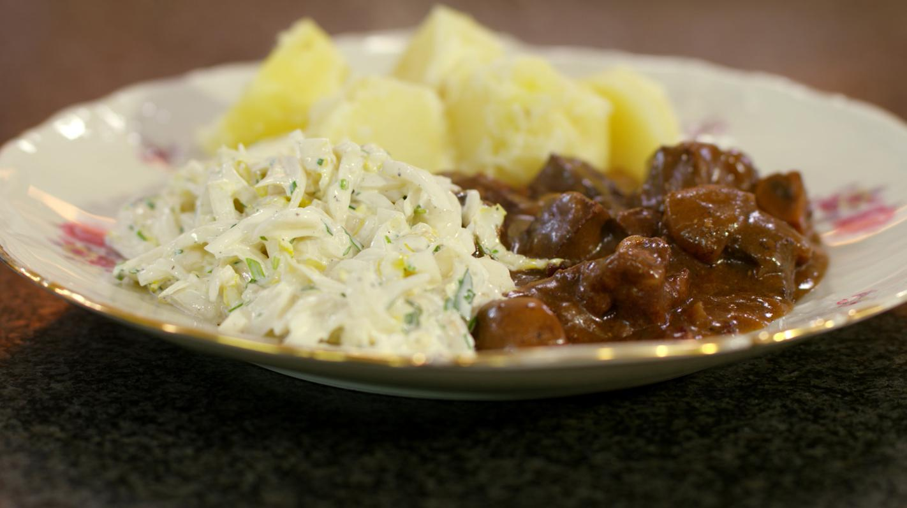

Stoofvlees van everzwijn

Description
This is a Flemisch recipes and it is heaven
- wild boar
- smoked bacon
- mushrooms
- onjions
- red wine
- flour
- jam
- gingerbread
- mustard
Steps
- Cook onjions and bacon
- Mix wild boar with the flour and cook
- Add muschrooms and onjions/bacon to the wild boar
- Add red wine and bring to a simmer
- put the mustard and gingerbread on top of the meat
- Turn down the heat and mix in the jam